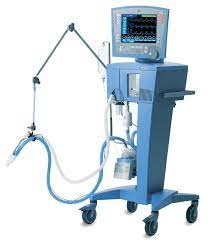

VENTILADOR MECANICO
back pag main
RX ARCO EN C

back pag main
MONITOR DE SIGNOS VITALES

back pag main
Respirador ARTIFICIAL
Ventilación mecánica: Tan no invasiva como sea posible, tan invasiva como sea necesario Los pacientes de la unidad de cuidados intensivos (UCI), que dependen de la ventilación mecánica, necesitan recibir los mejores cuidados desde su ingreso hasta el alta, e incluso más allá. Sin embargo, puede que sea necesario recurrir a diferentes herramientas en las distintas fases del tratamiento. La variabilidad y la diversidad de las herramientas de tratamiento mejoran claramente la toma de decisiones en la práctica clínica y en el tratamiento.
RX ARCO EN C 7000B
El arco en C está compuesto por un generador que produce Rayos X, los cuales penetran en el cuerpo del paciente, mientras que un intensificador de imagen que es un detector especializado convierte estos rayos en una imagen visible la cual se muestra en el monitor del equipo, permitiendo la identificación de estructuras anatómicas y sus detalles, la posición de implantes, materiales quirúrgicos, instrumentos y dispositivos médicos en cualquier momento durante el procedimiento y en tiempo real.
MONITOR DE SIGNOS VITALES
Al querer entender qué son los monitores de signos vitales es importante primero mencionar que se trata de equipos médicos que detectan y procesan información relacionada con el corazón de los pacientes, por lo que su uso es primordial en los hospitales. Para entender muy bien qué es y para qué sirve este equipo consideramos necesario aclarar que los signos vitales son mediciones por medio de las cuales se puede determinar cómo se comportan las funciones básicas del cuerpo. Esas mediciones son:Frecuencia de la respiración- Presión arterial- Temperatura del cuerpo Pulso
La Tecnologia en el Mundo de hoy
@ JEAN PAUL VEGA ROZO